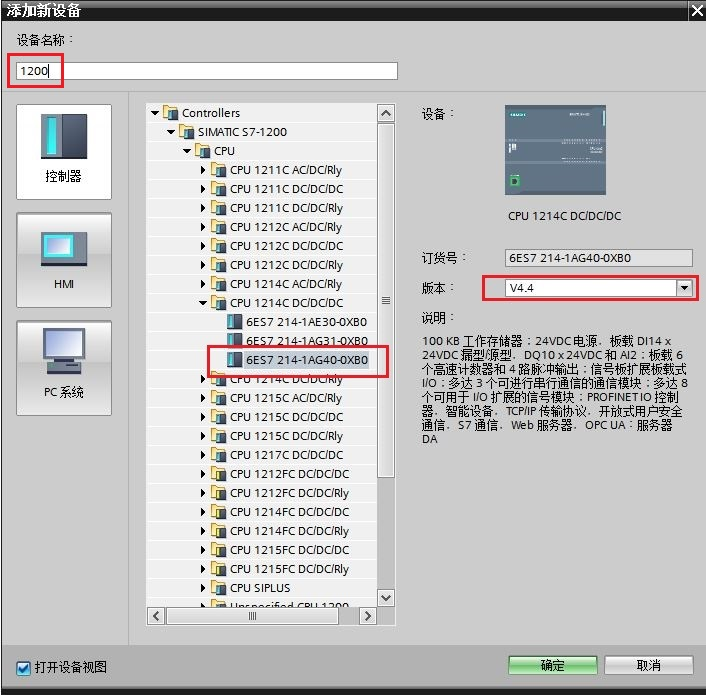
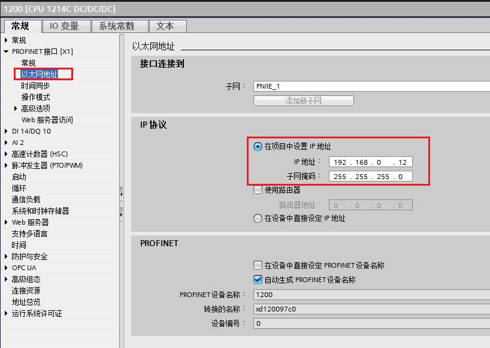
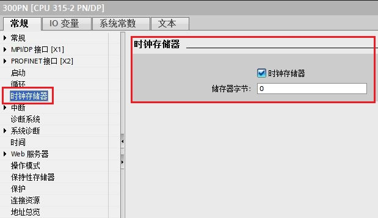
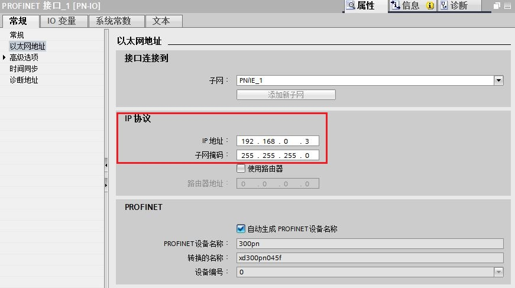
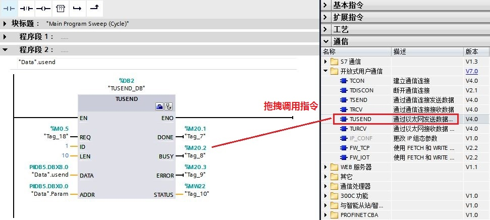
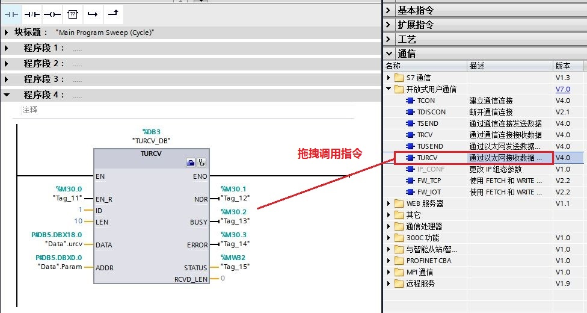

S7-1200 与 S7-300 PN 口之间的以太网通信可以通过 UDP 协议来实现，使用的通信指令是在双方 CPU 调用通信-开放式用户通信TSEND_C，TRCV_C（1200支持，300不支持）或TCON，TDISCON，TUSEND，TURCV 指令来实现。通信方式为双边通信，因此 TUSEND 和 TURCV 必须成对出现。
此外对于伙伴是S7-400PN 也可以参考本文档。
测试软/硬件：
① S7-1214 DC/DC/DC V4.4
② S7-315-2PN/DP V2.6
③ STEP7 V16
所完成的通信任务：
① S7-1200 CPU将通讯数据区 DB4 块中的 10 个字节的数据发送到 S7-300 CPU的接收数据区 DB5 块中。
② S7-300 CPU将通讯数据区 DB5 块中的 10 个字节的数据发送到 S7-1200 CPU的接收数据区 DB4 块中。
1.使用 STEP7 V16 软件新建一个项目并完成硬件配置
在 STEP7 V16 的 “Portal 视图” 中选择 “创建新项目” 创建一个新项目。
2.添加1200CPU硬件并命名PLC
然后进入 “项目视图”，在“项目树” 下双击 “添加新设备”，在对话框中选择所使用的 S7-1200 CPU添加到机架上，命名为 1200，如图1所示。

图1. 添加1200 CPU设备
为了编程方便，使用 CPU 属性中定义的时钟位，定义方法如下：
在 “项目树” > “1200” > “设备组态” 中，选中 CPU ，然后在下面的属性窗口中，“属性” > “系统和时钟存储器” 下，将系统位定义在 MB1，时钟字节定义在 MB0，如图2所示。
时钟位使用 M0.5，以 1Hz 的速率自动激活发送任务。
图2. 启用系统字节与时钟字节
3.为 PROFINET 通信口分配以太网地址
在 “设备视图”中点击 CPU 上代表 PROFINET 通信口的绿色小方块，在下方会出现 PROFINET 接口的属性，在 “以太网地址” 下分配 IP 地址为 192.168.0.12 ，子网掩码为255.255.255.0，如图3所示。

图3. 分配1200CPU IP 地址
4.添加300CPU硬件并命名PLC
然后进入 “项目视图”，在“项目树” 下双击 “添加新设备”，在对话框中选择所使用的 S7-300 CPU 添加到机架上，命名为 300PN，如图4所示。

图4. 添加300 CPU设备
为了编程方便，使用 CPU 属性中定义的时钟位，定义方法如下：
在 “项目树” > “300PN” > “设备组态” 中，选中 CPU ，然后在下面的属性窗口中，“属性” > “时钟存储器” 下时钟字节定义在 MB0，如图5所示。
时钟位使用 M0.5，以 1Hz 的速率自动激活发送任务。

图5. 启动时钟存储器
5.为 PROFINET 通信口分配以太网地址
在 “设备视图”中点击 CPU 上代表 PROFINET 通信口的绿色小方块，在下方会出现 PROFINET 接口的属性，在 “以太网地址” 下分配 IP 地址为 192.168.0.3，子网掩码为255.255.255.0，如图6所示。

图6. 分配300CPU IP 地址
7.创建 CPU之间的网络连接
在项目树 “项目树”>“设备和网络” >“网络视图” 视图下，创建两个设备的连接。用鼠标点中 S7-1200 上的PROFINET通信口的绿色小方框，然后拖拽出一条线，到另外一个 315-2PN/DP 上的PROFINET通信口上，松开鼠标，连接就建立起来了，如图7所示。
图7. 建立两个 CPU的网络连接
1.在OB1调用“TSEND_C”通信指令
在 S7-1200 CPU 中调用发送通信指令，进入 “项目树” > “ 1200” > “程序块” > “OB1” 主程序中，从右侧窗口 “指令” > “通信” > “开放式用户通信”下调用 “TSEND_C” 指令，创建连接，如图8所示。

图8. 调用 TSEND_C 通信指令
参数说明：
输入接口参数：
REQ |
:= %M0.5 |
// 使用 1Hz 的时钟脉冲，上升沿激活发送任务； |
CONT |
:= TRUE |
// 创建连接，默认TRUE； |
CONNECT |
:=“_1200_Receive_DB".ConnectionData |
// UDP连接结构描述； |
DATA |
:= "Data".USEND |
// 发送数据区的数据； |
ADDR |
:=“_1200_Receive_DB".ADDR_Send |
// UDP通讯伙伴的连接参数，包括对方IP地址及端口； |
输出接口参数：
DONE |
:= %M10.1 |
// 任务执行完成并且没有错误，该位置 1； |
BUSY |
:= %M10.2 |
// 该位为 1，代表任务未完成，不能激活新任务； |
ERROR |
:= %M10.3 |
// 通信过程中有错误发生，该位置 1； |
STATUS |
:= %MW12 |
// 有错误发生时，会显示错位信息号。 |
2.配置 S7-1200 的 “TSEND_C”连接参数
S7-1200 的 “TSEND_C”指令的连接参数需要在指令下方的属性窗口“属性”> “组态”>“连接参数中”中设置，如图9所示。
图9. 配置 TSEND_C 连接参数
连接参数说明：
端点 |
：可以通过点击选择按钮选择指定伙伴PLC； |
连接类型 |
：选择通信协议为 UDP； |
连接 ID |
：连接的地址 ID 号，这个 ID 号在后面的编程里会用到； |
连接数据 |
：点击新建自动生成该数据块； |
主动建立连接 |
： 此功能在UDP连接时，不能选择； |
地址详细信息 |
：定义本地通信的端口号为：2000，伙伴端口为：2000； |
3.创建并定义 S7-1200 的发送/接收数据区 DB4 块
通过“项目树”>“1200”>“程序块”>“添加新块”，选择“数据块” 创建 DB4 命名为“Data”。定义发送数据区USDED为 10 个字节的数组，接收数据区URCV为 10 个字节的数组，如图10所示。

图10. 创建发送/接收数据区 DB 块
4.在OB1调用“TRCV_C”通信指令
进入 “项目树” > “1200” > “程序块” > “OB1 ” 主程序中，从右侧窗口 “指令” > “通讯” > “开放式用户通信”下调用 “TRCV_C” 指令，如图11所示。

图11. 调用 TRCV_C 通信指令
参数说明：
输入接口参数：
REQ |
:= %M20.0 |
// 准备好接收数据 M20.0=TRUE； |
CONT |
:= TRUE |
// 创建连接，默认TRUE； |
CONNECT |
:=“_1200_Receive_DB".ConnectionData |
// UDP连接结构描述； |
DATA |
:= "Data".URCV |
// 接收数据区的数据； |
ADDR |
:=“_1200_Receive_DB".ADDR_Send |
// UDP通讯伙伴的连接参数，包括对方IP地址及端口； |
输出接口参数：
DONE |
:= %M20.1 |
// 任务执行完成并且没有错误，该位置 1； |
BUSY |
:= %M20.2 |
// 该位为 1，代表任务未完成，不能激活新任务； |
ERROR |
:= %M20.3 |
// 通信过程中有错误发生，该位置 1； |
STATUS |
:= %MW22 |
// 有错误发生时，会显示错位信息号。 |
5.配置 S7-1200 的 “TRCV_C”连接参数
S7-1200 的 “TRCV_C”指令的连接参数需要在指令下方的属性窗口“属性”> “组态”>“连接参数中”中设置，如图12所示。
图12. 配置 TRCV_C 连接参数
连接参数说明：
端点 |
：可以通过点击选择按钮选择指定伙伴PLC； |
连接类型 |
：选择通信协议为 UDP； |
连接 ID |
：连接的地址 ID 号，这个 ID 号在后面的编程里会用到； |
连接数据 |
：点击新建自动生成该数据块； |
主动建立连接 |
： 此功能在UDP连接时，不能选择； |
地址详细信息 |
：定义本地通信的端口号为：2000。 |
1200CPU侧配置和编程完成，编译并存盘。
1.在 S7-300 中调用“TCON”（300不支持TSEND_C和TRCV_C）通信指令
在S7-300 CPU 中调用通信指令，进入 “项目树” > “ 300PN” > “程序块” > “OB1” 主程序中，从右侧窗口 “指令” > “通讯” > “开放式用户通信”下调用 “TCON” 指令，创建连接，如图13所示。

图13. 调用 TCON 通信指令
2.配置S7-300 的 “TCON”连接参数
S7-300 的 “TCON”指令的连接参数需要在指令下方的属性窗口“属性”> “组态”>“连接参数中”中设置，如图14所示。
图14. 配置 TCON 连接参数
连接参数说明：
端点 |
：可以通过点击选择按钮选择指定伙伴PLC； |
连接类型 |
：选择通信协议为 UDP； |
连接 ID |
：连接的地址 ID 号，这个 ID 号在后面的编程里会用到； |
连接数据 |
：点击新建自动生成该数据块； |
主动建立连接 |
： 此功能在UDP连接时，不能选择； |
地址详细信息 |
：定义本地通信的端口号为：2000。 |
3.创建并定义 S7-300 的发送/接收数据区和UDP 连接参数数据块 DB5 块
通过“项目树”>“300PN”>“程序块”>“添加新块”，选择“数据块” 创建 DB5 命名为“Data”。定义发送数据区USEND为 10 个字节的数组，接收数据区URCV为 10 个字节的数组；
定义UDP 伙伴参数数据，数据类型为“TADDR_PAR”，包含伙伴的IP地址和端口号信息（如对方1200 CPU 的 IP：192.168.0.12，端口号：2000）。如图15所示。

图15. 创建发送/接收数据区和UDP 连接参数数据块DB 块
4.在 OB1 内调用“TUSEND” 通信指令
进入 “项目树” > “300PN” > “程序块” > “OB1 ” 主程序中，从右侧窗口 “指令” > “通讯” > “开放式用户通信”下调用 “TUSEND” 指令，配置接口参数，如图16所示。

图16. 调用 TUSEND 通信指令
参数说明：
输入接口参数：
REQ |
: = %M0.5 |
// 使用 1Hz 的时钟脉冲，上升沿激活发送任务； |
ID |
: = 1 |
// 创建连接ID； |
LEN |
:= 10 |
// 发送数据长度； |
DATA |
: = "Data".usend |
// 发送数据区的数据； |
ADDR |
: = "Data".Param |
// UDP通讯伙伴的连接参数，包括对方IP地址及端口，使用指针寻址； |
输出接口参数：
DONE |
:= %M20.1 |
// 任务执行完成并且没有错误，该位置 1； |
BUSY |
:= %M20.2 |
// 该位为 1，代表任务未完成，不能激活新任务； |
ERROR |
:= %M20.3 |
// 通信过程中有错误发生，该位置 1； |
STATUS |
:= %MW22 |
// 有错误发生时，会显示错位信息号。 |
5.在 OB1 内调用“TURCV” 通信指令
进入 “项目树” > “300PN” > “程序块” > “OB1 ” 主程序中，从右侧窗口 “指令” > “通讯” > “开放式用户通信”下调用 “TURCV” 指令，配置接口参数，如图17所示。

图17. 调用 TURCV 指令并配置接口参数
参数说明：
输入接口参数：
EN_R |
:= M30.0 |
// 准备好接收数据 M30.0=TRUE； |
ID |
:= 1 |
// 连接号，使用的是 TCON 的连接参数中 ID号； |
LEN |
:= 10 |
// 接收数据长度为 10 个字节； |
DATA |
: = "Data".urcv |
// 接收数据区的地址； |
ADDR |
: = "Data".Param |
// UDP通讯伙伴的连接参数，包括对方IP地址及端口，使用指针寻址； |
输出接口参数：
NDR |
:= %M30.1 |
// 该位为 1，接收任务成功完成； |
BUSY |
:= %M30.2 |
// 该位为 1，代表任务未完成，不能激活新任务； |
ERROR |
:= %M30.2 |
// 通信过程中有错误发生，该位置 1； |
STATUS |
:= %MW32 |
// 有错误发生时，会显示错误信息号； |
RCVD_LEN |
// 实际接收数据的字节数。 |
300CPU侧配置和编程完成，编译并存盘。
下载两个 CPU 中的所有硬件组态及程序，实现 两个 CPU 之间数据交换，监控结果如图18所示。
图18. 监控结果
如果通信异常，请参考以下附加说明：链接。